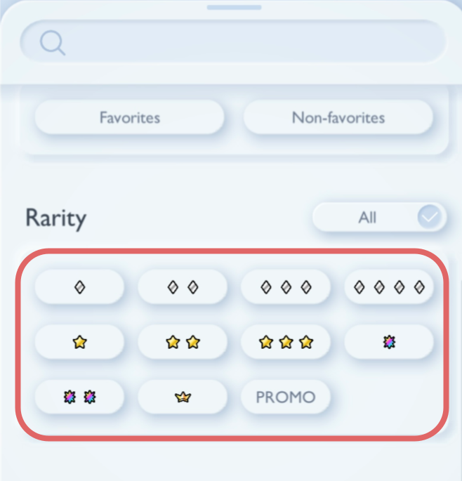

Is your luck bad, average, good, or amazing?
Instructions
To find out how many packs you have opened and how many wonder picks you have done, click on the circled button in your Pokemon TCG Pocket app.
Once you have opened your profile, you should scroll until you find the following trophies. This is under the "Achivements" section. Click on the circled trophy to find out how many packs you have opened (excluding promo packs). Click the adjacent trophy to find out how many wonder picks you have done.

To find how many cards of each rarity you have, press the highlighted icon to open the search menu.
Select one of the rarity buttons in the highlighted area. Then, scroll down until you reach the "search" button.
Lastly, you will be presented with only the cards of the rarity you selected. The number of cards you have of that rarity will be displayed in the highlighted area.